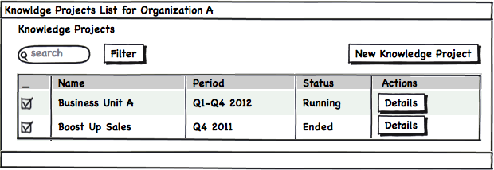
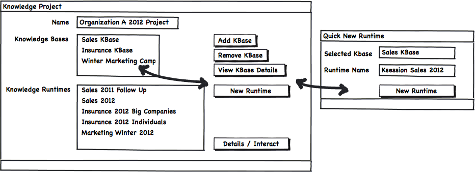
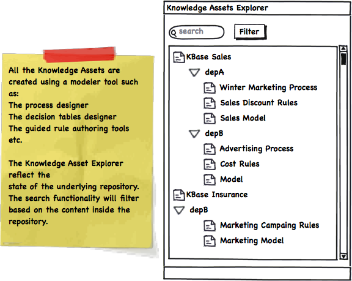
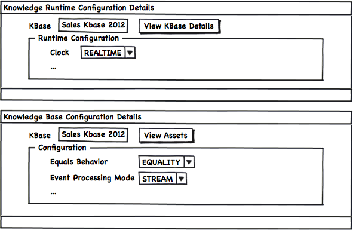
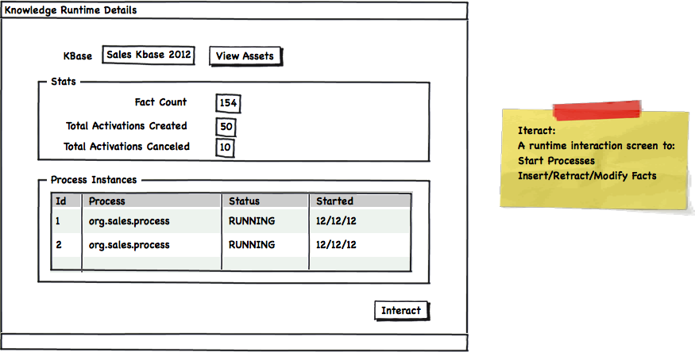
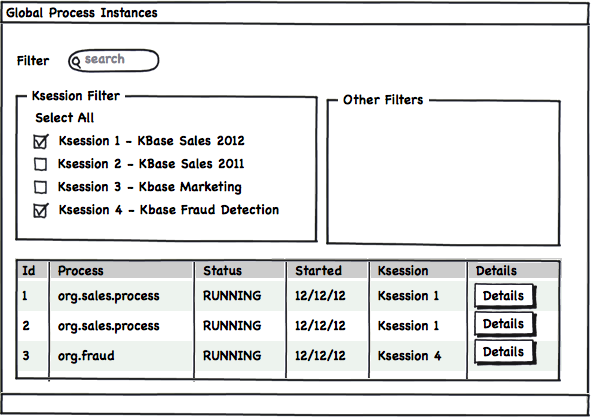
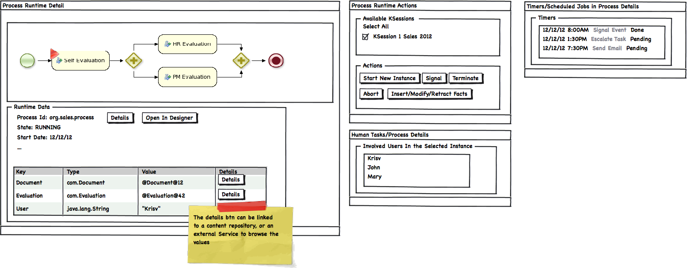
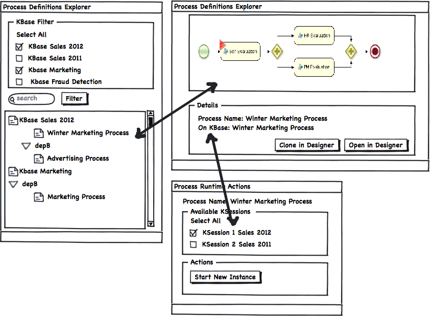

Knowledge Based Runtime UIs Requirements
Drools and jBPM5 conform a Business Logic Integration Platform. This means that the Rules & the Process Engines will share their runtime. If you take a look at the Knowledge Based APIs that the platform provides you will see that the StatefulKnowledgeSession interface is the main entry point to access both engines. For this reason a need for a unified Assets Repository and a unified set of Runtime UIs is required. This posts describe from a very high level perspective, what in my opinion is a set of Panels (UI Screens) that allows us interact with our session runtimes, no matter where they are located. This post is a follow up to my previous post about Human Task Interactions that you can find here.
Introduction
Our analysis will start with the assumption that there will be a set of User Interface that will allows us to model/design our Knowledge Assets. We will also asume that we have a centralized repository that allows us to store and organize our Knowledge Assets. Topics like how the assets are organized, stored, indexed and maintained inside the repository are out of the scope for this post.
I will be describing each block of functionality as a decoupled entity, how we mix and match these blocks will depend on the Users needs and requirements. I will provide a default set of perspectives (set of panels together with a predefined layout) just to demonstrate how the usage could be. Several perspective and more use case specific panels can be defined for different scenarios, the important thing here is to understand what information is available and how it can be organized.
Key Concepts
Before starting with the UIs let’s review quickly the main concepts that we want to expose via the application screens:
- Knowledge Assets: each piece of Business Knowledge that we can model and store inside our business repository. Common examples about Knowledge Assets are: Rules, Processes, Models, Decision Tables, Ontologies, etc
- Knowledge Base: Selecting a group of Knowledge Assets we can conform a Knowledge Base which will contain all the knowledge required to support a business situation. Usually we will create a Knowledge Base with a well scoped set of Assets (that can be organized in packages or any other logical structure) to solve specific topics. Depending on the business requirements we will decide how many Knowledge Based do we need per Business Unit or Department in our organization.
- Knowledge Runtime / Session: From one defined Knowledge Base we can create multiple Knowledge Runtimes. Depending on the problem that we are trying to solve and how the knowledge was modeled and designed is how many runtimes we will need to spawn.
- Knowledge Project: a set of Knowledge Sessions that conforms a logical group of functionality.
Defining Our Runtimes
Based on the previous concepts we can start defining our UI from the Knowledge Project concept:

- Knowledge Projects List
As starting point we will have a list of the current projects that we have. This list can be filtered by the status of the project, the period when the project is relevant and also by a higher level concept, like for example the Organization that is running the project.
When we want to start a new project we will need to define the Knowledge Assets and the Runtimes that will be used:

- Project Configuration
The Knowledge Bases will be defined based on the content of the repository and it will be composed by Rules, Processes, Models, Etc.
In order to add more assets to a Knowledge Base we will need to upload the assets to a certain path into the repository. The Knowledge Asset explorer reflects the content of the repository and it allows us to access to the Assets Modeling Tools like: The Process Designer, The Guided Rule Editor, The Decision Tables Editor, etc.

- Knowledge Asset Explorer
Once we have our Knowledge Base defined, we can quickly create new Runtimes/Sessions to use that Knowledge Base.
From both Knowledge Bases and Knowledge Runtimes we wil have their own Configuration Panels:

- KBase & KRuntime Configurations
The following mock up shows the Session Runtime Details view which gives us some statistics about the internal data of the selected session.

- Knowledge Runtime Details
Once we have our Sessions defined and running we will need a different set of views to interact with them. The different views will be defined based on the end users roles interested in interacting with them.
Process Views
From the process perspective we will want to create new Process Instances and browse the current ones.

- Global Process Instances Explorer
Because now we can have multiple Sessions running different Process Instances, we will need to filter and select the sessions in which are we interested. If we really don’t care where our process instances are running we can just select all the available sessions and hide the Ksession filter.
We can drill down into a selected Process Instance to see in detail what’s the status of that specific instance:

- Process Runtime Detail
As you can see, in the previous figure, a set of specific views can be created to interact and browse the Process Instance Details. All these views will include links to the authoring tools, like for example the Process Designer.
A similar set of panels should be also provided for the user that wants to instantiate a fresh process instance. A set of filters based on the available Knowledge Bases should be provided for the user to Select the specific process and the Runtime where it should be instantiated.

- Process Definition Explorer & Instantiation
Get Involved
As usual, this is a proposal trying to cover most of the aspect required to interact with Knowledge Runtimes and with a set of views oriented to Business Processes. In the same way, we can provide a different set of panels to handle all the interactions with Rules and Events.
If you think that all the features described here are important, or if you are planning to adopt a solution like the one described in this post please get involved and share your thoughts and extra requirements that you may need. I will start sharing my personal experiments on the basic components exposed in this post. This is a very good opportunity to join forces and help in the creation of these components. If you wanna help and learn in the process please write a comment here or contact me via the public jBPM5 channels. The more requirements that we can gather, more re-usable will be the end results.
Summary
This post cover what I believe are the most important bits that Knowledge Based Platform UI should provide. I’m not saying that these features are enough but this post will serve as the starting point for more advanced mechanisms to improve how the work is being done. I’ve intentionally left out of this post several important topics like: the BAM module, The Knowledge Authoring Tools Task Statistics, the Knowledge Repository Organization and Reporting. All these topics will be covered in future posts. Now that you reach the end of the post please read again the“Get Involved” section and drop us a line with your comments/suggestions.

{kind=link}
{kind=link}
{kind=link}
{kind=link}
{kind=link}
{kind=link}
{kind=link}
{kind=link}